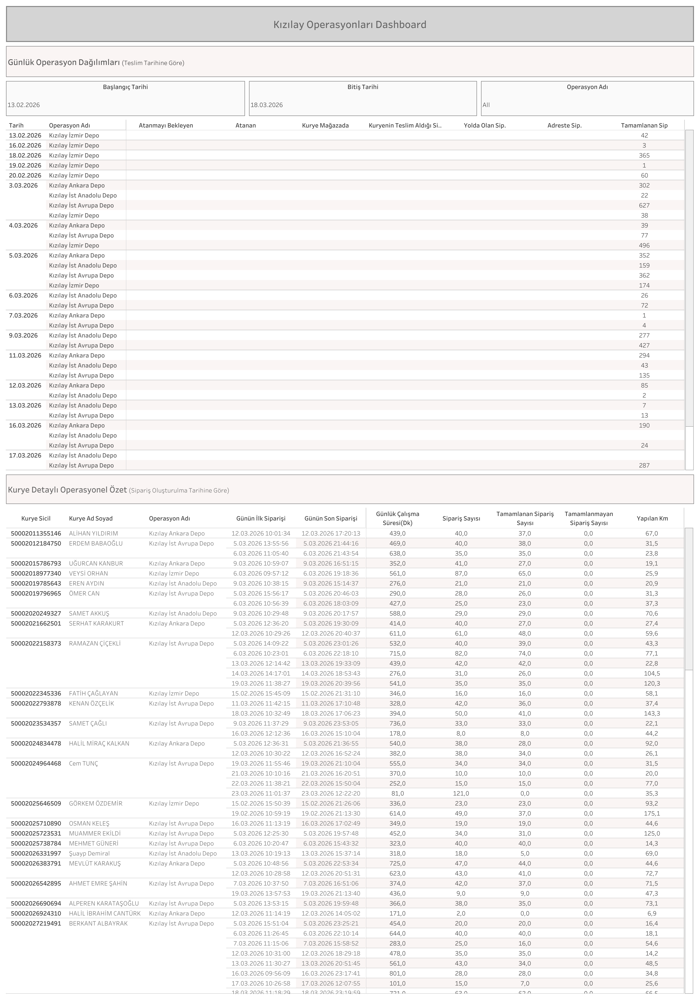

Canlı Rapora Erişin
Güncel Kızılay operasyon verilerini Tableau üzerinde interaktif olarak görüntüleyin.
Dashboard Hakkında
Ne Gösterir?
Kızılay Dashboard, Kızılay Ankara Depo, Kızılay İst Anadolu Depo, Kızılay İst Avrupa Depo ve Kızılay İzmir Depo operasyonlarına ait günlük sipariş durumlarını ve kurye bazlı detaylı performansı listeler.
- Günlük Operasyon Dağılımları: Tarih ve operasyon bazlı tamamlanan sipariş sayısı
- Kurye Detaylı Operasyonel Özet: Kurye sicil, ad soyad, operasyon adı, günlük ilk/son sipariş saatleri
- Çalışma Süresi: Günlük çalışma süresi (Dk), sipariş sayısı ve tamamlanan/tamamlanmayan sipariş ayrımı
- Yapılan Km: Kurye bazlı günlük kilometre bilgisi
- Filtreler: Başlangıç tarihi, bitiş tarihi ve operasyon adı seçimi
Dashboard Önizleme

Kızılay Dashboard — Tableau